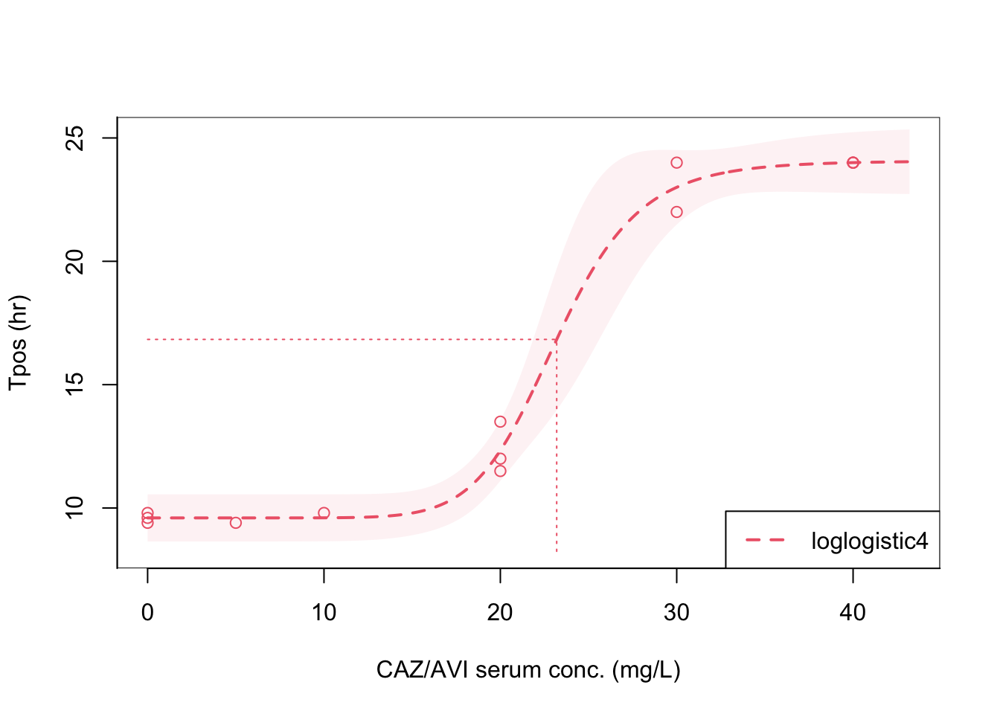
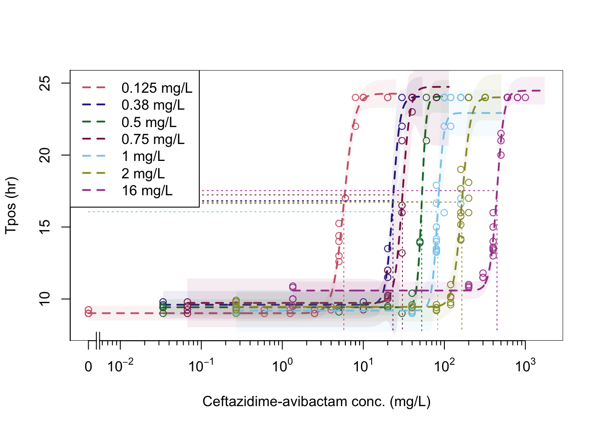

WORKPACKAGE 1A: QUANTITATIVE RELATIONSHIP OF TPOS WITH BACTERIAL INOCULUM
METHODS
In this package we will establish the quantitative relationship of Tpos and KPC-carbapenemase producing Klebsiella pneumoniae inoculum in blood culture bottles.
The methods for the assay are a modification of those originally proposed by Kaltsas et al.1 Detailed procedures can be found at this link. Methodology for preparing the test inoculum was adapted from CLSI M21A and M26A guidelines.
Briefly, tubes containing 1.8 mL of pooled healthy human serum are inoculated with 0.2 mL of a series of ten-fold dilutions (5x101 to 5x107 CFU/mL) of the standardised inoculum of each test indicator strains.
The sera were are then transferred into BacT⁄ALERT bottles without antibiotic inactivating matrix (Biomérieux Inc) for aerobic incubation for 24 hours and monitored for time to positivity.
Tpos results were used to establish preliminary assay quality control ranges by testing in triplicate for five KPC-carbapenemase producing K. pneumoniae strains (KPC A, B and C strains; NDM, and VIM producing strains) and a reference K. pneumoniae ATCC strain producing ESBL enzyme only. More detailed information on the isolates can be found on the Protocols section.
We also compared how Tpos results change if the organism suspension prepared in phosphate buffered saline (PBS-0.9%) versus pooled human serum (serum).
RESULTS
The relationship between Tpos and the K. pneumoniae inoculum is shown below. A linear relationship was observed from approximately 101-108K. pneumoniae CFU/mL and a Tpos measured from 10.5 hours-4.5 hours over the tested inoculum range, with R2 of 0.92-0.94. The linear relationship of Tpos versus inoculum was consistent if the inoculum was prepared in PBS or pooled human serum as shown in [Table 1].
Note
In the paper by Kaltsas et al.1 the reported inoculum was the inoculum introduced in to the bloodculture bottle, 30-40 mL of growth media (depending on the manufacturer).
Therefore we have followed this precedent of reporting the inoculum introduced into each bottle. Therefore, this does not represent the final test inoculum that need to account for the total 42 mL volume in each bloodculture bottle.
All experiments were performed using bloodculture bottles without antibiotic inactivating matrix
library (ggplot2)library(scales)theme_set(theme_bw())## import raw data from .csv filewp1 <-read.csv("~/Desktop/ACUTEWEBSITE/wp1a.csv")## plot raw data as x-y graph Tpos graph vs. drug concentrations stratified by dilution matrix, method="lm" is the method for linear regressionfig1 <-ggplot(wp1, aes(x=inoculum, y=tpos, color=isolates, shape=diluent, fill=isolates)) +geom_point(size=4, alpha =0.5) +scale_y_continuous(name="Tpos (hr)", limits=c(4,12)) +theme(legend.text=element_text(size=12)) +geom_smooth(aes(linetype=diluent), method=lm , color="black", fill="#69b3a2", se=TRUE, inherit.aes =TRUE)fig1fig1 +theme_bw(base_size =14)+scale_x_log10(name="Inoculum CFU/mL", breaks =trans_breaks("log10",n=7, function(x) 10^x),labels =trans_format("log10", math_format(10^.x)))
Figure 1: Relationship of time-to-positivity (Tpos) versus test inoculum
Figure 2: Relationship of time-to-positivity (Tpos) versus test inoculum
## import raw data from .xlsx filelibrary (readxl)ecoliatcc_inoc <-read_excel("datasets_single/ecoliatcc_inoculum.xlsx")library (ggplot2)library(scales)theme_set(theme_bw())## plot raw data as x-y graph Tpos graph vs. drug concentrations stratified by dilution matrix, method="lm" is the method for linear regressionfigecoli <-ggplot(ecoliatcc_inoc, aes(x=inoculum, y=tpos)) +geom_point(size=4, alpha =0.5) +scale_y_continuous(name="Tpos (hr)", limits=c(4,12)) +theme(legend.text=element_text(size=12)) +geom_smooth(aes(linetype=diluent), method=lm , color="black", fill="#69b3a2", se=TRUE, inherit.aes =TRUE )figecoli +theme_bw(base_size =14)+scale_x_log10(name="Inoculum CFU/mL", breaks =trans_breaks("log10",n=7, function(x) 10^x),labels =trans_format("log10", math_format(10^.x)))
Figure 3: Relationship of time-to-positivity (Tpos) versus test inoculum
library (ggplot2)library(scales)theme_set(theme_bw())## import raw data from .csv filelibrary (readxl)abaumani <-read_excel("abaum_pbs.xlsx")## plot raw data as x-y graph Tpos graph vs. drug concentrations stratified by dilution matrix, method="lm" is the method for linear regressionfig1ab <-ggplot(abaumani, aes(x=inoculum, y=tpos)) +geom_point(size=4, alpha =0.5) +scale_y_continuous(name="Tpos (hr)", limits=c(4,12)) +theme(legend.text=element_text(size=12)) +geom_smooth(aes(linetype=diluent), method=lm , color="black", fill="#69b3a2", se=TRUE, inherit.aes =TRUE )fig1ab +theme_bw(base_size =14)+scale_x_log10(name="Inoculum CFU/mL", breaks =trans_breaks("log10",n=7, function(x) 10^x),labels =trans_format("log10", math_format(10^.x)))
Figure 4: Relationship of time-to-positivity (Tpos) versus test inoculum for Acinetobacter baumanii
library (ggplot2)library(scales)theme_set(theme_bw())## import raw data from .csv filelibrary (readxl)pseudo <-read_excel("pseudo_pbs.xlsx")## plot raw data as x-y graph Tpos graph vs. drug concentrations stratified by dilution matrix, method="lm" is the method for linear regressionfig2f <-ggplot(pseudo, aes(x=inoculum, y=tpos, color=isolates, fill=isolates)) +geom_point(size=4, alpha =0.5) +scale_y_continuous(name="Tpos (hr)", limits=c(4,12)) +theme(legend.text=element_text(size=12)) +geom_smooth(aes(linetype=diluent), method=lm , color="black", fill="#69b3a2", se=TRUE, inherit.aes =TRUE )fig2f +theme_bw(base_size =14)+scale_x_log10(name="Inoculum CFU/mL", breaks =trans_breaks("log10",n=7, function(x) 10^x),labels =trans_format("log10", math_format(10^.x)))
Figure 5: Relationship of time-to-positivity (Tpos) versus test inoculum for Pseudomonas aeruginosa
As shown in Figure 6, a marked increased in the Tpos for KPC_B from < 10 hrs to > 24 hrs when CAZ/AVI concentrations surpassed 1 mg/L. In contrast, the negative control KPC_NDM strain exhibited consistent Tpos < 10hr at all test concentrations with lack of antimicrobial activity. Trends in Tpos relative to antibiotic exposure were fitted by Loess.
## a four-parameter logistic regression model is fit to ceftazidime concentrations to estimated PD parameterslibrary (readxl)library(drda)caz_avi_7a <-read_excel("datasets_single/kpatcc_caz_avi_powder4-1.xlsx")fit_atcc <-drda(tpos ~ ctz_s, data=caz_avi_7a, mean_function ="loglogistic4", max_iter =1000)plot(fit_atcc, xlab ="CAZ/AVI serum conc. (mg/L)", ylab ="Tpos (hr)")
Figure 7: Pharmacodynamic relationship of Tpos to ceftazidime/avibactam concentrations
Code
## Analysis is repeated to produce a table reporting estimated EC10-EC95 parameter estiamtes plus 95% CI library (readxl)library(drda)library(broom)library(kableExtra)caz_avi_7a <-read_excel("datasets_single/kpatcc_caz_avi_powder4-1.xlsx")fit_atcc <-drda(tpos ~ ctz_s, data=caz_avi_7a, mean_function ="loglogistic4", max_iter =1000)ed<-effective_dose(fit_atcc, y =c(0.10,0.25,0.50,0.75,0.90,0.95))kbl(ed)%>%kable_paper("hover", full_width = F, position ="left")
Table 5: Pharmacodynamic estimates
Estimate
Lower .95
Upper .95
0.1
23.87874
19.31716
28.44033
0.25
26.93812
24.06902
29.80723
0.5
30.38948
29.11007
31.66888
0.75
34.28302
31.38838
37.17767
0.9
38.67541
33.84814
43.50268
0.95
41.98020
33.98412
49.97627
K. pneumoniae ATCC 700603 (MIC 0.75 mg/L) fixed 4 mg/L
## a four-parameter logistic regression model is fit to ceftazidime concentrations to estimated PD parameterslibrary (readxl)library(drda)caz_avi_7b <-read_excel("datasets_single/kpatcc_caz_avi_powderfix4.xlsx")fit_atcc2 <-drda(tpos ~ ctz_s, data=caz_avi_7b, mean_function ="loglogistic4", max_iter =1000)plot(fit_atcc2, xlab ="CAZ/AVI serum conc. (mg/L)", ylab ="Tpos (hr)")
Figure 8: Pharmacodynamic relationship of Tpos to ceftazidime/avibactam concentrations
Code
## Analysis is repeated to produce a table reporting estimated EC10-EC95 parameter estiamtes plus 95% CI library (readxl)library(drda)library(broom)library(kableExtra)caz_avi_7a <-read_excel("datasets_single/kpatcc_caz_avi_powderfix4.xlsx")fit7a <-drda(tpos ~ ctz_s, data=caz_avi_7a, mean_function ="loglogistic4", max_iter =1000)ed<-effective_dose(fit7a, y =c(0.10,0.25,0.50,0.75,0.90,0.95))kbl(ed)%>%kable_paper("hover", full_width = F, position ="left")
## a four-parameter logistic regression model is fit to ceftazidime concentrations to estimated PD parameterslibrary (readxl)library(drda)caz_avi_4 <-read_excel("datasets_single/kpcb_caz_avi_com.xlsx")fit4 <-drda(tpos ~ ctz_s, data=caz_avi_4, mean_function ="loglogistic4", max_iter =1000)plot(fit4, xlab ="CAZ/AVI serum conc. (mg/L)", ylab ="Tpos (hr)")
Figure 9: Pharmacodynamic relationship of Tpos to ceftazidime/avibactam concentrations
Code
## Analysis is repeated to produce a table reporting estimated EC10-EC95 parameter estimates plus 95% CI library (readxl)library(drda)library(broom)library(kableExtra)caz_avi_4 <-read_excel("datasets_single/kpcb_caz_avi_com.xlsx")fit4 <-drda(tpos ~ ctz_s, data=caz_avi_4, mean_function ="loglogistic4", max_iter =1000)ed<-effective_dose(fit4, y =c(0.10,0.25,0.50,0.75,0.90,0.95))kbl(ed)%>%kable_paper("hover", full_width = F, position ="left")
## a four-parameter logistic regression model is fit to ceftazidime concentrations to estimated PD parameterslibrary (readxl)library(drda)caz_avi_6 <-read_excel("datasets_single/kpcb_caz_avi_powder_4-1.xlsx")fit6 <-drda(tpos ~ ctz_s, data=caz_avi_6, mean_function ="loglogistic4", max_iter =1000)plot(fit6, xlab ="CAZ/AVI serum conc. (mg/L)", ylab ="Tpos (hr)")
Figure 10: Pharmacodynamic relationship of Tpos to ceftazidime/avibactam concentrations
Code
## Analysis is repeated to produce a table reporting estimated EC10-EC95 parameter estimates plus 95% CI library (readxl)library(drda)library(broom)library(kableExtra)caz_avi_6 <-read_excel("datasets_single/kpcb_caz_avi_powder_4-1.xlsx")fit6 <-drda(tpos ~ ctz_s, data=caz_avi_6, mean_function ="loglogistic4", max_iter =1000)ed<-effective_dose(fit6, y =c(0.10,0.25,0.50,0.75,0.90,0.95))kbl(ed)%>%kable_paper("hover", full_width = F, position ="left")
Table 8: Pharmacodynamic estimates
Estimate
Lower .95
Upper .95
0.1
68.88793
61.14631
76.62954
0.25
75.52374
71.50425
79.54322
0.5
82.79876
79.85671
85.74080
0.75
90.77456
83.70890
97.84023
0.9
99.51866
86.97415
112.06317
0.95
105.94237
88.43755
123.44720
KPC A (MIC 2 mg/L) commercial
Code
## a four-parameter logistic regression model is fit to ceftazidime concencentrations to estimated PD parameterslibrary (readxl)library(drda)caz_avi_7 <-read_excel("datasets_single/kpca_caz_avi_com.xlsx")fit7 <-drda(tpos ~ ctz_s, data=caz_avi_7, mean_function ="loglogistic4", max_iter =1000)plot(fit7, xlab ="CAZ/AVI serum conc. (mg/L)", ylab ="Tpos (hr)")
Figure 11: Pharmacodynamic relationship of Tpos to ceftazidime/avibactam concentrations
Code
## Analysis is repeated to produce a table reporting estimated EC10-EC95 parametersestiamtes plus 95% CI library (readxl)library(drda)library(broom)library(kableExtra)caz_avi_7 <-read_excel("datasets_single/kpca_caz_avi_com.xlsx")fit7 <-drda(tpos ~ ctz_s, data=caz_avi_7, mean_function ="loglogistic4", max_iter =1000)ed<-effective_dose(fit7, y =c(0.10,0.25,0.50,0.75,0.90,0.95))kbl(ed)%>%kable_paper("hover", full_width = F, position ="left")
Figure 12: Pharmacodynamic relationship of Tpos to ceftazidime/avibactam concentrations
Code
## Analysis is repeated to produce a table reporting estimated EC10-EC95 parametersestiamtes plus 95% CI library (readxl)library(drda)library(broom)library(kableExtra)caz_avi_8 <-read_excel("datasets_single/kpca_caz_avi_powder_4-1.xlsx")fit8 <-drda(tpos ~ ctz_s, data=caz_avi_8, mean_function ="loglogistic4", max_iter =1000)ed<-effective_dose(fit8, y =c(0.10,0.25,0.50,0.75,0.90,0.95))kbl(ed)%>%kable_paper("hover", full_width = F, position ="left")
Table 10: Pharmacodynamic relationship of Tpos to ceftazidime/avibactam concentrations
Estimate
Lower .95
Upper .95
0.1
125.7716
114.3869
137.1562
0.25
143.8460
136.1835
151.5085
0.5
164.5179
158.8981
170.1377
0.75
188.1605
179.1859
197.1350
0.9
215.2007
197.7571
232.6444
0.95
235.7798
202.9734
268.5861
KPC A (MIC 2 mg/L) fixed 4 mg/L
Code
## a four-parameter logistic regression model is fit to ceftazidime concentrations to estimated PD parameterslibrary (readxl)library(drda)caz_avi_9 <-read_excel("datasets_single/kpca_caz_avi_powder_fix4.xlsx")fit9 <-drda(tpos ~ ctz_s, data=caz_avi_9, mean_function ="loglogistic4", max_iter =1000)plot(fit9, xlab ="CAZ/AVI serum conc. (mg/L)", ylab ="Tpos (hr)")
Figure 13: Pharmacodynamic relationship of Tpos to ceftazidime/avibactam concentrations
Code
## Analysis is repeated to produce a table reporting estimated EC10-EC95 parameter estiamtes plus 95% CI library (readxl)library(drda)library(broom)library(kableExtra)caz_avi_9 <-read_excel("datasets_single/kpca_caz_avi_powder_fix4.xlsx")fit9 <-drda(tpos ~ ctz_s, data=caz_avi_9, mean_function ="loglogistic4", max_iter =1000)ed<-effective_dose(fit9, y =c(0.10,0.25,0.50,0.75,0.90,0.95))kbl(ed)%>%kable_paper("hover", full_width = F, position ="left")
Table 11: Pharmacodynamic estimates
Estimate
Lower .95
Upper .95
0.1
26.02302
22.05197
29.99406
0.25
37.21041
34.05205
40.36876
0.5
53.20729
50.04995
56.36463
0.75
76.08130
70.56354
81.59905
0.9
108.78892
81.37114
136.20669
0.95
138.74444
47.74622
229.74266
KPC B (MIC 1 mg/L) fixed 4 mg/L
Code
## a four-parameter logistic regression model is fit to ceftazidime concentrations to estimated PD parameterslibrary (readxl)library(drda)caz_avi_10 <-read_excel("datasets_single/kpcb_caz_avi_powder_fix4.xlsx")fit10<-drda(tpos ~ ctz_s, data=caz_avi_10, mean_function ="loglogistic4", max_iter =1000)plot(fit10, xlab ="CAZ/AVI serum conc. (mg/L)", ylab ="Tpos (hr)")
Figure 14: Pharmacodynamic relationship of Tpos to ceftazidime/avibactam concentrations
Code
## Analysis is repeated to produce a table reporting estimated EC10-EC95 parameters estimates plus 95% CI library (readxl)library(drda)library(broom)library(kableExtra)caz_avi_10 <-read_excel("datasets_single/kpcb_caz_avi_powder_fix4.xlsx")fit10 <-drda(tpos ~ ctz_s, data=caz_avi_10, mean_function ="loglogistic4", max_iter =1000)ed<-effective_dose(fit10, y =c(0.10,0.25,0.50,0.75,0.90,0.95))kbl(ed)%>%kable_paper("hover", full_width = F, position ="left")
Table 12: Pharmacodynamic estimates
Estimate
Lower .95
Upper .95
0.1
21.16519
15.15120
27.17918
0.25
27.06283
22.30567
31.81998
0.5
34.60383
31.40317
37.80449
0.75
44.24612
39.07653
49.41571
0.9
56.57521
43.63228
69.51813
0.95
66.87013
38.60827
95.13199
KPC B (MIC 1 mg/L) high inoculum
We examined how the relationship of Tpos vs. ceftazidime/avibactam concentrations changes when tested against a higher inoculum (1x107 CFU/mL). The same methodology as described above was used for testing. As shown in Figure 15 and Table 13 the EC50 and EC90 were marginally higher when tested at the higher inoculum with a more shallow dose-response relationship.
Code
## a four-parameter logistic regression model is fit to ceftazidime concentrations to estimated PD parameterslibrary (readxl)library(drda)caz_avi_5 <-read_excel("datasets_single/kpcb_caz_avi_com_hinoc.xlsx")fithinc <-drda(tpos ~ ctz_s, data=caz_avi_5, mean_function ="loglogistic4", max_iter =1000)plot(fithinc, xlab ="CAZ/AVI serum conc. (mg/L)", ylab ="Tpos (hr)")
Figure 15: Pharmacodynamic relationship of Tpos to ceftazidime/avibactam concentrations against a high-inoculum
Code
## Analysis is repeated to produce a table reporting estimated EC10-EC95 parameter estimates plus 95% CI library (readxl)library(drda)library(broom)library(kableExtra)caz_avi_5 <-read_excel("datasets_single/kpcb_caz_avi_com_hinoc.xlsx")fithinc <-drda(tpos ~ ctz_s, data=caz_avi_5, mean_function ="loglogistic4", max_iter =1000)ed<-effective_dose(fithinc, y =c(0.10,0.25,0.50,0.75,0.90,0.95))kbl(ed)%>%kable_paper("hover", full_width = F, position ="left")
Table 13: Pharmacodynamic estimates for a high-inoculum
Estimate
Lower .95
Upper .95
0.1
82.08148
71.35951
92.80344
0.25
117.28496
109.48524
125.08468
0.5
167.58667
159.06133
176.11201
0.75
239.46201
222.24533
256.67869
0.9
342.16357
290.42168
393.90546
0.95
436.16833
240.82684
631.50983
KPC Catania (MIC 16 mg/L) powder 4:1
Code
## a four-parameter logistic regression model is fit to ceftazidime concentrations to estimated PD parameterslibrary (readxl)library(drda)caz_avi_catan <-read_excel("datasets_single/kpccatania_caz_avi_powder_4-1.xlsx")fitcat <-drda(tpos ~ ctz_s, data=caz_avi_catan, mean_function ="loglogistic4", max_iter =1000)plot(fitcat, xlab ="CAZ/AVI serum conc. (mg/L)", ylab ="Tpos (hr)")
Figure 16: Pharmacodynamic relationship of Tpos to ceftazidime/avibactam concentrations against a resistant strain
Code
## Analysis is repeated to produce a table reporting estimated EC10-EC95 parameter estimates plus 95% CI library (readxl)library(drda)library(broom)library(kableExtra)caz_avi_5 <-read_excel("datasets_single/kpccatania_caz_avi_powder_4-1.xlsx")fitcat <-drda(tpos ~ ctz_s, data=caz_avi_catan, mean_function ="loglogistic4", max_iter =1000)ed<-effective_dose(fitcat, y =c(0.10,0.25,0.50,0.75,0.90,0.95))kbl(ed)%>%kable_paper("hover", full_width = F, position ="left")
Table 14: Pharmacodynamic estimates
Estimate
Lower .95
Upper .95
0.1
357.0678
344.5988
369.5368
0.25
399.4416
391.4077
407.4755
0.5
446.8440
438.8360
454.8519
0.75
499.8716
486.9293
512.8140
0.9
559.1922
538.6586
579.7258
0.95
603.5119
566.2421
640.7818
KPC Catania (MIC 16 mg/L) fixed 4 mg/L
Code
## a four-parameter logistic regression model is fit to ceftazidime concentrations to estimated PD parameterslibrary (readxl)library(drda)caz_avi_5 <-read_excel("datasets_single/kpccatania_caz_avi_powderfix.xlsx")fitcat5 <-drda(tpos ~ ctz_s, data=caz_avi_5, mean_function ="loglogistic4", max_iter =1000)plot(fitcat5, xlab ="CAZ/AVI serum conc. (mg/L)", ylab ="Tpos (hr)")
Figure 17: Pharmacodynamic relationship of Tpos to ceftazidime/avibactam concentrations against a high-inoculum
Code
## Analysis is repeated to produce a table reporting estimated EC10-EC95 parameter estimates plus 95% CI library (readxl)library(drda)library(broom)library(kableExtra)caz_avi_5 <-read_excel("datasets_single/kpccatania_caz_avi_powderfix.xlsx")fit5 <-drda(tpos ~ ctz_s, data=caz_avi_5, mean_function ="loglogistic4", max_iter =1000)ed<-effective_dose(fit5, y =c(0.10,0.25,0.50,0.75,0.90,0.95))kbl(ed)%>%kable_paper("hover", full_width = F, position ="left")
Table 15: Pharmacodynamic estimates
Estimate
Lower .95
Upper .95
0.1
227.1879
181.0095
273.3664
0.25
292.7908
255.0843
330.4973
0.5
377.3372
356.2659
398.4084
0.75
486.2972
454.9664
517.6279
0.9
626.7205
552.7132
700.7278
0.95
744.7437
610.2525
879.2349
KPC K. pneumoniae KPRAD (MIC 0.5 mg/L)
Code
## a four-parameter logistic regression model is fit to ceftazidime concentrations to estimated PD parameterslibrary (readxl)library(drda)caz_avi_kprad <-read_excel("datasets_single/kp_PRAD_caz_avi_powder4-1.xlsx")fitkprad <-drda(tpos ~ ctz_s, data=caz_avi_kprad, mean_function ="loglogistic4", max_iter =1000)plot(fitkprad, xlab ="CAZ/AVI serum conc. (mg/L)", ylab ="Tpos (hr)")
Figure 18: Pharmacodynamic relationship of Tpos to ceftazidime/avibactam concentrations against KPC- producing K. pneumoniae
Code
## Analysis is repeated to produce a table reporting estimated EC10-EC95 parameter estimates plus 95% CI library (readxl)library(drda)library(broom)library(kableExtra)caz_avi_kprad <-read_excel("datasets_single/kp_PRAD_caz_avi_powder4-1.xlsx")fitkprad <-drda(tpos ~ ctz_s, data=caz_avi_kprad, mean_function ="loglogistic4", max_iter =1000)ed<-effective_dose(fitkprad, y =c(0.10,0.25,0.50,0.75,0.90,0.95))kbl(ed)%>%kable_paper("hover", full_width = F, position ="left")
Table 16: Pharmacodynamic estimates
Estimate
Lower .95
Upper .95
0.1
45.60828
44.00945
47.20710
0.25
48.96778
47.95219
49.98337
0.5
52.57475
51.68561
53.46388
0.75
56.44741
54.94883
57.94598
0.9
60.60532
58.19775
63.01290
0.95
63.60696
59.97950
67.23441
K. pneumoniae KFAB ESBL (MIC 0.38 mg/L)
Code
## a four-parameter logistic regression model is fit to ceftazidime concentrations to estimated PD parameterslibrary (readxl)library(drda)caz_avi_kfab <-read_excel("datasets_single/kp_FAB_caz_avi_powder4-1.xlsx")fitkfab <-drda(tpos ~ ctz_s, data=caz_avi_kfab, mean_function ="loglogistic4", max_iter =1000)plot(fitkfab, xlab ="CAZ/AVI serum conc. (mg/L)", ylab ="Tpos (hr)")

Figure 19: Pharmacodynamic relationship of Tpos to ceftazidime/avibactam concentrations against KPC- producing K. pneumoniae
Code
## Analysis is repeated to produce a table reporting estimated EC10-EC95 parameter estimates plus 95% CI library (readxl)library(drda)library(broom)library(kableExtra)caz_avi_kfab <-read_excel("datasets_single/kp_FAB_caz_avi_powder4-1.xlsx")fitkfab <-drda(tpos ~ ctz_s, data=caz_avi_kfab, mean_function ="loglogistic4", max_iter =1000)ed<-effective_dose(fitkfab, y =c(0.10,0.25,0.50,0.75,0.90,0.95))kbl(ed)%>%kable_paper("hover", full_width = F, position ="left")
Table 17: Pharmacodynamic estimates
Estimate
Lower .95
Upper .95
0.1
18.54827
17.58236
19.51418
0.25
20.74190
20.01959
21.46420
0.5
23.19495
22.00443
24.38548
0.75
25.93813
23.96559
27.91067
0.9
29.00572
26.27565
31.73580
0.95
31.29690
27.87479
34.71901
K. pneumoniae WT (MIC 0.125 mg/L)
Code
## a four-parameter logistic regression model is fit to ceftazidime concentrations to estimated PD parameterslibrary (readxl)library(drda)caz_avi_wt2 <-read_excel("datasets_single/kpwt_caz_avi_powder_4-1.xlsx")fitwt <-drda(tpos ~ ctz_s, data=caz_avi_wt2, mean_function ="loglogistic4", max_iter =1000)plot(fitwt, xlab ="CAZ/AVI serum conc. (mg/L)", ylab ="Tpos (hr)")
Figure 20: Pharmacodynamic relationship of Tpos to ceftazidime/avibactam concentrations against a wt strain
Code
library (readxl)library(drda)caz_avi_wt2 <-read_excel("datasets_single/kpwt_caz_avi_powder_4-1.xlsx")fitwt <-drda(tpos ~ ctz_s, data=caz_avi_wt2, mean_function ="loglogistic4", max_iter =1000)## Analysis is repeated to produce a table reporting estimated EC10-EC95 parameter estimates plus 95% CI library (readxl)library(drda)library(broom)library(kableExtra)caz_avi_5 <-read_excel("datasets_single/kpwt_caz_avi_powder_4-1.xlsx")fitwt2 <-drda(tpos ~ ctz_s, data=caz_avi_wt2, mean_function ="loglogistic4", max_iter =1000)ed<-effective_dose(fitwt, y =c(0.10,0.25,0.50,0.75,0.90,0.95))kbl(ed)%>%kable_paper("hover", full_width = F, position ="left")
Table 18: Pharmacodynamic estimates K. pneumoniae WT (MIC 0.125 mg/L)
Estimate
Lower .95
Upper .95
0.1
4.104039
3.907545
4.300533
0.25
4.853535
4.727647
4.979422
0.5
5.739906
5.602824
5.876987
0.75
6.788149
6.522560
7.053738
0.9
8.027827
7.540413
8.515241
0.95
8.997963
8.099929
9.895996
E. coli ATCC 25922 (MIC 0.19 mg/L)
Code
## a four-parameter logistic regression model is fit to ceftazidime concentrations to estimated PD parameterslibrary (readxl)library(drda)caz_avi_ecoli <-read_excel("datasets_single/ecoliatcc_caz_avi_powder4-1.xlsx")fitecoli <-drda(tpos ~ ctz_s, data=caz_avi_ecoli, mean_function ="loglogistic4", max_iter =1000)plot(fitecoli, xlab ="CAZ/AVI serum conc. (mg/L)", ylab ="Tpos (hr)")
Figure 21: Pharmacodynamic relationship of Tpos to ceftazidime/avibactam concentrations against E. coli ATCC 25922 (MIC 0.19 mg/L)
Code
## Analysis is repeated to produce a table reporting estimated EC10-EC95 parameter estimates plus 95% CI library (readxl)library(drda)library(broom)library(kableExtra)caz_avi_ecoli <-read_excel("datasets_single/ecoliatcc_caz_avi_powder4-1.xlsx")fitecoli <-drda(tpos ~ ctz_s, data=caz_avi_ecoli, mean_function ="loglogistic4", max_iter =1000)ed<-effective_dose(fitecoli, y =c(0.10,0.25,0.50,0.75,0.90,0.95))kbl(ed)%>%kable_paper("hover", full_width = F, position ="left")
Table 19: Pharmacodynamic estimates for a high-inoculum
Estimate
Lower .95
Upper .95
0.1
3.823371
3.241785
4.404957
0.25
4.312649
3.937461
4.687837
0.5
4.864540
4.644781
5.084298
0.75
5.487056
5.137118
5.836995
0.9
6.189236
5.480141
6.898332
0.95
6.717490
5.482243
7.952737
COMPARISON OF POSSIBLE INDICATOR ISOLATES
Code
## a four-parameter logistic regression model is fit to ceftazidime concentrations to estimated PD parameterslibrary (readxl)library(drda)kpca <-read_excel("datasets_single/kpca_caz_avi_powder_4-1.xlsx")kpcb <-read_excel("datasets_single/kpcb_caz_avi_powder_4-1.xlsx")kpccatania <-read_excel("datasets_single/kpccatania_caz_avi_powder_4-1.xlsx")caz_avi_kfab <-read_excel("datasets_single/kp_FAB_caz_avi_powder4-1.xlsx")kpwt <-read_excel("datasets_single/kpwt_caz_avi_powder_4-1.xlsx")caz_avi_kprad <-read_excel("datasets_single/kp_PRAD_caz_avi_powder4-1.xlsx")kpatcc <-read_excel("datasets_single/kpatcc_caz_avi_powder4-1.xlsx")## fit models for each of the isolatesfitkpca <-drda(tpos ~ ctz_s, kpca, mean_function ="loglogistic4", max_iter =1000)fitkpcatcc <-drda(tpos ~ ctz_s, kpatcc, mean_function ="loglogistic4", max_iter =1000)fitkpcb <-drda(tpos ~ ctz_s, kpcb, mean_function ="loglogistic4", max_iter =1000)fitkpccatania <-drda(tpos ~ ctz_s, kpccatania, mean_function ="loglogistic4", max_iter =1000)fitkpwt <-drda(tpos ~ ctz_s, kpwt, mean_function ="loglogistic4", max_iter =1000)fitkfab <-drda(tpos ~ ctz_s, data=caz_avi_kfab, mean_function ="loglogistic4", max_iter =1000)fitkprad <-drda(tpos ~ ctz_s, data=caz_avi_kprad, mean_function ="loglogistic4", max_iter =1000)## plot all of the isolates togetherp <-plot(fitkpwt, fitkfab, fitkprad, fitkpcatcc, fitkpcb, fitkpca, fitkpccatania, base="10", xlab ="Ceftazidime-avibactam conc. (mg/L)", ylab ="Tpos (hr)",cex =0.9, legend_location="topleft", legend =c("0.125 mg/L", "0.38 mg/L", "0.5 mg/L", "0.75 mg/L", "1 mg/L", "2 mg/L", "16 mg/L"))

Figure 22: Pharmacodynamic relationship of Tpos to ceftazidime/avibactam concentrations
CONCLUSIONS
These data demonstrate that Tpos is a robust PD endpoint and the relationship of ceftazidime/avibactam concentrations versus Tpos follows classical sigmoidal dose response relationship with a steep transitional portion of the dose response curve that occurs near the MIC of the pathogen. Although ED50/90 estimates were broadly similar if the commercial (pharmaceutical) and analytical powder formulations were tested, used of high-fixed concentrations of avibactam or testing at very high K. pneumoniae inocula resulted in broader concentration-effect curves and higher EC50/90 estimates.
MEROPENEM
K. pneumoniae ATCC (MIC 0.03 mg/L)
The impact of increasing meropenem concentrations on Tpos observed with the ATCC ESBL producing Klebsiella pneumoniae was tested using similar methodology as previously described
Analytical powder was used to produce serum concentration
As shown in Figure 23, Tpos increased as meropenem concentrations surpassed the MIC, with an estimated pharmacodynamic parameters consistent with previous experiments that showed transition in the EC50/EC90 at simulated serum concentrations near the MIC as shown in Table 20.
Code
## a four-parameter logistic regression model is fit to meropenem concentrations to estimated PD parameterslibrary (readxl)library(drda)mero <-read_excel("datasets_single/ATCC_meropenem.xlsx")fit11 <-drda(tpos ~ mero_s, data=mero, mean_function ="loglogistic4", max_iter =1000)plot(fit11, xlab ="Meropenem serum conc. (mg/L)", ylab ="Tpos (hr)", xlim =c(0,100))
Figure 23: Pharmacodynamic relationship of Tpos to meropenem concentrations
Code
## Analysis is repeated to produce a table reporting estimated EC10-EC95 parameter estimates plus 95% CI library (readxl)library(drda)library(broom)library(kableExtra)mero <-read_excel("datasets_single/ATCC_meropenem.xlsx")fit11 <-drda(tpos ~ mero_s, data=mero, mean_function ="loglogistic4", max_iter =1000)ed<-effective_dose(fit11, y =c(0.10,0.25,0.50,0.75,0.90,0.95))kbl(ed)%>%kable_paper("hover", full_width = F, position ="left")
Table 20: Pharmacodynamic estimates
Estimate
Lower .95
Upper .95
0.1
1.165027
1.026833
1.303220
0.25
1.460430
1.351831
1.569029
0.5
1.830736
1.764894
1.896577
0.75
2.294935
2.177266
2.412605
0.9
2.876837
2.586027
3.167648
0.95
3.354810
2.861582
3.848038
KPC B (MIC 32 mg/L)
Code
## a four-parameter logistic regression model is fit to meropenem concentrations to estimated PD parameterslibrary (readxl)library(drda)mero2 <-read_excel("datasets_single/KPCB_meropenem.xlsx")fit11 <-drda(tpos ~ mero_s, data=mero2, mean_function ="loglogistic4", max_iter =1000)plot(fit11, xlab ="Meropenem serum conc. (mg/L)", ylab ="Tpos (hr)", xlim =c(0,100))
Figure 24: Pharmacodynamic relationship of Tpos to meropenem concentrations
Code
## Analysis is repeated to produce a table reporting estimated EC10-EC95 parameter estimates plus 95% CI library (readxl)library(drda)library(broom)library(kableExtra)mero2 <-read_excel("datasets_single/KPCB_meropenem.xlsx")fit11 <-drda(tpos ~ mero_s, data=mero2, mean_function ="loglogistic4", max_iter =1000)ed<-effective_dose(fit11, y =c(0.10,0.25,0.50,0.75,0.90,0.95))kbl(ed)%>%kable_paper("hover", full_width = F, position ="left")
Table 21: Pharmacodynamic estimates
Estimate
Lower .95
Upper .95
0.1
39.09324
38.35251
39.83397
0.25
40.62838
40.06818
41.18857
0.5
42.22380
41.61877
42.82882
0.75
43.88187
43.02567
44.73807
0.9
45.60505
44.37855
46.83155
0.95
46.81557
45.21113
48.42000
Comparison of ATCC and KPC B isolates
A comparison of meropenem activity against the ATCC ESBL-producing reference (MIC 0.03 mg/L) and KPC-carbapenemase producing K. pneumoniae isolates are shown in Figure 25. The meropenem EC50 measured by Tpos was 23-fold higher for the KPC-carbapenemase producing isolate versus the the ESBL-producing ATCC isolate. Despite variability in the response was noted for the KPC-B isolate at 20 mg/L and 80 mg/mL concentrations (experiments are currently being repeated), the EC50 were nearly identical (indicated by the dotted lines) when corrected for pathogen MIC. These data suggest that it may be possible to substitute sensitive indicator isolates with low MICs to predict pharmacodynamic responses of isolates with higher MICs.
Code
## a four-parameter logistic regression model is fit to ceftazidime concentrations to estimated PD parameterslibrary (readxl)library(drda)mero2 <-read_excel("datasets_single/KPCB_meropenem.xlsx")mero <-read_excel("datasets_single/ATCC_meropenem.xlsx")fit4a <-drda(tpos ~ mero, mero, mean_function ="loglogistic4", max_iter =1000)fit4b <-drda(tpos ~ mero, mero2, mean_function ="loglogistic4", max_iter =1000)plot(fit4a, fit4b, xlab ="Meropenem conc. (mg/L)", ylab ="Tpos",cex =0.9,legend =c("KP ATCC ESBL", "KP KPC_2"))
Figure 25: Pharmacodynamic relationship of Tpos to ceftazidime/avibactam concentrations
CONCLUSIONS
Similar to ceftazidime-avibactam, experiments with meropenem demonstrated that Tpos is a robust PD endpoint and the relationship of meropenem concentrations versus Tpos follows classical sigmoidal dose response relationship with a steep transitional portion of the dose response curve that occurs near the MIC of the pathogen.
A key observation is that the pharmacodynamics were similar when meropenem was tested against a highly-susceptible ATCC isolate (MIC 0.03 mg/L) and and the KPC-producing K.pneumoniae B isolate (MIC 32 mg/L) with at proportional difference in the EC50/90. Therefore, it may be possible to use highly-susceptible “indicator” strains for testing to predict activity against more resistant isolates. This is important because direct testing of 1 mL inoculum may routinely result in limited antimicrobial activity measured by Tpos (<10 hours) as dilutional effects when the serum samples is introduced into the bottle containing a total volume of 42 mL will reduce the actual testing concentrations of the antibiotics below the MIC for highly resistant pathogens.
This effect could be counteracted by testing with highly sensitive “indicator” isolates based on the expected serum concentrations of the antibiotic.
GENTAMICIN
KPC A (MIC 2 mg/L)
Code
## a four-parameter logistic regression model is fit to gentamicin concentrations to estimated PD parameterslibrary (readxl)library(drda)gent1 <-read_excel("datasets_single/KPCA_gent.xlsx")fit12 <-drda(tpos ~ gent_s, data=gent1, mean_function ="loglogistic4", max_iter =1000)plot(fit12, xlab ="Gentamicin serum conc. (mg/L)", ylab ="Tpos (hr)")
Figure 26: Pharmacodynamic relationship of Tpos to gentamicin concentrations
Code
## Analysis is repeated to produce a table reporting estimated EC10-EC95 parameter estimates plus 95% CI library (readxl)library(drda)library(broom)library(kableExtra)gent1 <-read_excel("datasets_single/KPCA_gent.xlsx")fit12 <-drda(tpos ~ gent_s, data=gent1, mean_function ="loglogistic4", max_iter =1000)ed<-effective_dose(fit12, y =c(0.10,0.25,0.50,0.75,0.90,0.95))kbl(ed)%>%kable_paper("hover", full_width = F, position ="left")
Table 22: Pharmacodynamic estimates
Estimate
Lower .95
Upper .95
0.1
56.65250
53.43037
59.87462
0.25
62.53591
60.25523
64.81660
0.5
69.03033
67.01957
71.04109
0.75
76.19920
73.71019
78.68821
0.9
84.11256
79.42354
88.80158
0.95
89.95932
78.37830
101.54033
KPC B (MIC 0.5 mg/L)
Code
## a four-parameter logistic regression model is fit to gentamicin concentrations to estimated PD parameterslibrary (readxl)library(drda)gent2 <-read_excel("datasets_single/KPCB_gent.xlsx")fit13 <-drda(tpos ~ gent_s, data=gent2, mean_function ="loglogistic4", max_iter =1000)plot(fit13, xlab ="Gentamicin serum conc. (mg/L)", ylab ="Tpos (hr)")
Figure 27: Pharmacodynamic relationship of Tpos to gentamicin concentrations
Code
## Analysis is repeated to produce a table reporting estimated EC10-EC95 parameter estimates plus 95% CI library (readxl)library(drda)library(broom)library(kableExtra)gent2 <-read_excel("datasets_single/KPCB_gent.xlsx")fit13 <-drda(tpos ~ gent_s, data=gent2, mean_function ="loglogistic4", max_iter =1000)ed<-effective_dose(fit13, y =c(0.10,0.25,0.50,0.75,0.90,0.95))kbl(ed)%>%kable_paper("hover", full_width = F, position ="left")
Table 23: Pharmacodynamic estimates
Estimate
Lower .95
Upper .95
0.1
18.56332
16.93133
20.19530
0.25
19.92766
19.06150
20.79382
0.5
21.39227
20.34817
22.43636
0.75
22.96452
20.81244
25.11660
0.9
24.65233
21.10862
28.19605
0.95
25.87062
20.96263
30.77861
COLISTIN
KPC B (MIC 0.125 mg/L)
Code
## a four-parameter logistic regression model is fit to colistin concentrations to estimated PD parameterslibrary (readxl)library(drda)coli1 <-read_excel("datasets_single/KPCB_coli.xlsx")fit14 <-drda(tpos ~ coli_s, data=coli1, mean_function ="loglogistic4", max_iter =1000)plot(fit14, xlab ="Colistin serum conc. (mg/L)", ylab ="Tpos (hr)")
Figure 28: Pharmacodynamic relationship of Tpos to colistin concentrations
Code
## Analysis is repeated to produce a table reporting estimated EC10-EC95 parameter estimates plus 95% CI library (readxl)library(drda)library(broom)library(kableExtra)coli1 <-read_excel("datasets_single/KPCB_coli.xlsx")fit14 <-drda(tpos ~ coli_s, data=coli1, mean_function ="loglogistic4", max_iter =1000)ed<-effective_dose(fit14, y =c(0.10,0.25,0.50,0.75,0.90,0.95))kbl(ed)%>%kable_paper("hover", full_width = F, position ="left")
Table 24: Pharmacodynamic estimates
Estimate
Lower .95
Upper .95
0.1
3.814341
3.374386
4.254296
0.25
4.696574
4.395993
4.997155
0.5
5.782863
5.463324
6.102402
0.75
7.120404
6.500514
7.740293
0.9
8.767309
7.696486
9.838132
0.95
10.100091
8.130500
12.069682
MEROPENEM-VABORBACTAM
KPC B (MIC X mg/L)
Code
## a four-parameter logistic regression model is fit to meropenem-vaborbactam concentrations to estimated PD parameterslibrary (readxl)library(drda)vabo1 <-read_excel("datasets_single/KPCB_vabo.xlsx")fit14 <-drda(tpos ~ vabo_s, data=vabo1, mean_function ="loglogistic4", max_iter =1000)plot(fit14, xlab ="Meropenem-vabobactam serum conc. (mg/L)", ylab ="Tpos (hr)")
Figure 29: Pharmacodynamic relationship of Tpos to meropenem-vaborbactam concentrations
Code
## Analysis is repeated to produce a table reporting estimated EC10-EC95 parameter estimates plus 95% CI library (readxl)library(drda)library(broom)library(kableExtra)vabo1 <-read_excel("datasets_single/KPCB_vabo.xlsx")fit14 <-drda(tpos ~ vabo_s, data=vabo1, mean_function ="loglogistic4", max_iter =1000)ed<-effective_dose(fit14, y =c(0.10,0.25,0.50,0.75,0.90,0.95))kbl(ed)%>%kable_paper("hover", full_width = F, position ="left")
Table 25: Pharmacodynamic estimates
Estimate
Lower .95
Upper .95
0.1
5.391292
4.092373
6.690211
0.25
7.797856
6.671079
8.924633
0.5
11.278661
10.098053
12.459269
0.75
16.313228
13.817427
18.809029
0.9
23.595123
18.006802
29.183445
0.95
30.327549
19.089870
41.565227
TIGECYCLINE
Important
Experiments performed using freshly collected blood samples that use EDTA as an anticoagulant result in enhanced tigecycline activity as previously reported by Deitchman et al.2 This phenomena was evident in preliminary experiments as shown in Figure 30.
Figure 30: Effect of tigeycvcline concentrations on Tpos of K. pneumoniae using serum collected with and withouth EDTA
KPC-A (MIC 0.75 mg/L)
Code
## a four-parameter logistic regression model is fit to tigecycline concentrations to estimated PD parameterslibrary (readxl)library(drda)tig1 <-read_excel("datasets_single/kpca_tig.xlsx")fit15 <-drda(tpos ~ tig_s, data=tig1, mean_function ="loglogistic4", max_iter =1000)plot(fit15, xlab ="Tigecycline serum conc. (mg/L)", ylab ="Tpos (hr)")
Figure 31: Pharmacodynamic relationship of Tpos to tigecycline concentrations
Code
## Analysis is repeated to produce a table reporting estimated EC10-EC95 parameter estimates plus 95% CI library (readxl)library(drda)library(broom)library(kableExtra)tig1 <-read_excel("datasets_single/kpca_tig.xlsx")fit15 <-drda(tpos ~ tig_s, data=tig1, mean_function ="loglogistic4", max_iter =1000)ed<-effective_dose(fit15, y =c(0.10,0.25,0.50,0.75,0.90,0.95))kbl(ed)%>%kable_paper("hover", full_width = F, position ="left")
Table 26: Pharmacodynamic estimates
Estimate
Lower .95
Upper .95
0.1
26.21193
22.64088
29.78298
0.25
33.33312
30.73822
35.92801
0.5
42.38896
40.56986
44.20806
0.75
53.90507
50.72689
57.08325
0.9
68.54984
60.64442
76.45527
0.95
80.72308
56.72937
104.71680
KPC-B (MIC 0.38 mg/L)
Code
## a four-parameter logistic regression model is fit to tigecycline concentrations to estimated PD parameterslibrary (readxl)library(drda)tig2 <-read_excel("datasets_single/kpcb_tig.xlsx")fit16 <-drda(tpos ~ tig_s, data=tig2, mean_function ="loglogistic4", max_iter =1000)plot(fit16, xlab ="Tigecycline serum conc. (mg/L)", ylab ="Tpos (hr)")
Figure 32: Pharmacodynamic relationship of Tpos to tigecycline concentrations
Code
## Analysis is repeated to produce a table reporting estimated EC10-EC95 parameter estimates plus 95% CI library (readxl)library(drda)library(broom)library(kableExtra)tig2 <-read_excel("datasets_single/kpca_tig.xlsx")fit16 <-drda(tpos ~ tig_s, data=tig2, mean_function ="loglogistic4", max_iter =1000)ed<-effective_dose(fit16, y =c(0.10,0.25,0.50,0.75,0.90,0.95))kbl(ed)%>%kable_paper("hover", full_width = F, position ="left")
Table 27: Pharmacodynamic estimates
Estimate
Lower .95
Upper .95
0.1
26.21193
22.64088
29.78298
0.25
33.33312
30.73822
35.92801
0.5
42.38896
40.56986
44.20806
0.75
53.90507
50.72689
57.08325
0.9
68.54984
60.64442
76.45527
0.95
80.72308
56.72937
104.71680
E. coli ATCC 25922 (MIC 0.125 mg/L)
Code
## a four-parameter logistic regression model is fit to tigecycline concentrations to estimated PD parameterslibrary (readxl)library(drda)tigecoli <-read_excel("datasets_single/ecoliatcc_tig.xlsx")fittigecoli <-drda(tpos ~ tig_s, data=tigecoli, mean_function ="loglogistic4", max_iter =1000)plot(fittigecoli, xlab ="Tigecycline serum conc. (mg/L)", ylab ="Tpos (hr)")
Figure 33: Pharmacodynamic relationship of Tpos to tigecycline concentrations
Code
## Analysis is repeated to produce a table reporting estimated EC10-EC95 parameter estimates plus 95% CI library (readxl)library(drda)library(broom)library(kableExtra)tigecoli <-read_excel("datasets_single/ecoliatcc_tig.xlsx")fittigecoli <-drda(tpos ~ tig_s, data=tigecoli, mean_function ="loglogistic4", max_iter =1000)ed<-effective_dose(fittigecoli, y =c(0.10,0.25,0.50,0.75,0.90,0.95))kbl(ed)%>%kable_paper("hover", full_width = F, position ="left")
Table 28: Pharmacodynamic estimates
Estimate
Lower .95
Upper .95
0.1
4.099751
3.742536
4.456966
0.25
6.123028
5.816673
6.429382
0.5
9.144816
8.798910
9.490721
0.75
13.657892
12.976866
14.338918
0.9
20.398226
18.087056
22.709396
0.95
26.796582
18.484108
35.109056
E. coli ATCC 25922 (MIC 0.125 mg/L) protein binding
Code
## a four-parameter logistic regression model is fit to ceftazidime concentrations to estimated PD parameterslibrary (readxl)library(drda)serum <-read_excel("datasets_single/ecoliatcc_tig_serum.xlsx")pbs <-read_excel("datasets_single/ecoliatcc_tig_pbs.xlsx")fitserum <-drda(tpos ~ tig_s, serum, mean_function ="loglogistic4", max_iter =1000)fitpbs <-drda(tpos ~ tig_s, pbs, mean_function ="loglogistic4", max_iter =1000)plot(fitserum, fitpbs, xlab ="Tigecycline conc. (mg/L)", ylab ="Tpos",cex =0.9,legend =c("serum", "PBS"))
Figure 34: Pharmacodynamic relationship of Tpos to ceftazidime/avibactam concentrations
Code
## a four-parameter logistic regression model is fit to ceftazidime concentrations to estimated PD parameterslibrary (readxl)library(drda)library(broom)library(kableExtra)serum <-read_excel("datasets_single/ecoliatcc_tig_serum.xlsx")pbs <-read_excel("datasets_single/ecoliatcc_tig_pbs.xlsx")fitserum <-drda(tpos ~ tig_s, serum, mean_function ="loglogistic4", max_iter =1000)fitpbs <-drda(tpos ~ tig_s, pbs, mean_function ="loglogistic4", max_iter =1000)edserum<-effective_dose(fitserum, y =c(0.10,0.25,0.50,0.75,0.90,0.95))edpbs<-effective_dose(fitpbs, y =c(0.10,0.25,0.50,0.75,0.90,0.95))kbl(edserum)%>%kable_paper("hover", full_width = F, position ="left")
Estimate
Lower .95
Upper .95
0.1
2.123423
2.085530
2.161317
0.25
3.333204
3.299344
3.367064
0.5
5.232235
5.196848
5.267621
0.75
8.213202
8.144849
8.281556
0.9
12.892521
12.733520
13.051522
0.95
17.519723
17.041417
17.998028
Figure 35: Pharmacodynamic relationship of Tpos to ceftazidime/avibactam concentrations
Code
kbl(edpbs)%>%kable_paper("hover", full_width = F, position ="left")
Estimate
Lower .95
Upper .95
0.1
4.283286
3.530962
5.035611
0.25
6.954032
6.402163
7.505901
0.5
11.290059
10.592118
11.988000
0.75
18.329717
17.061603
19.597832
0.9
29.758793
17.553542
41.964045
0.95
41.376913
0.000000
90.646797
Figure 36: Pharmacodynamic relationship of Tpos to ceftazidime/avibactam concentrations
CEFTAZIDIME
K. pneumoniae ATCC 700603 (MIC 12 mg/L)
Code
## a four-parameter logistic regression model is fit to ceftazidime concentrations to estimated PD parameterslibrary (readxl)library(drda)ceftaz_atcc <-read_excel("datasets_single/kpatcc_ceftazidime.xlsx")fit_ceftazatcc <-drda(tpos ~ ctz_s, data=ceftaz_atcc, mean_function ="loglogistic4", max_iter =1000)plot(fit_ceftazatcc, xlab ="Ceftazidime serum conc. (mg/L)", ylab ="Tpos (hr)")
Figure 37: Pharmacodynamic relationship of Tpos to ceftazidime concentrations against an ESBL producing ATCC strain
Code
## Analysis is repeated to produce a table reporting estimated EC10-EC95 parameter estimates plus 95% CI library (readxl)library(drda)library(broom)library(kableExtra)ceftaz_atcc <-read_excel("datasets_single/kpatcc_ceftazidime.xlsx")fit_ceftazatcc <-drda(tpos ~ ctz_s, data=ceftaz_atcc, mean_function ="loglogistic4", max_iter =1000)ed<-effective_dose(fit_ceftazatcc, y =c(0.10,0.25,0.50,0.75,0.90,0.95))kbl(ed)%>%kable_paper("hover", full_width = F, position ="left")
Table 29: Pharmacodynamic estimates
Estimate
Lower .95
Upper .95
0.1
245.8990
206.8423
284.9557
0.25
295.0812
265.6254
324.5370
0.5
354.1003
335.4615
372.7390
0.75
424.9237
398.3337
451.5137
0.9
509.9125
446.8074
573.0176
0.95
577.2350
434.9467
719.5233
K. pneumoniae KP-DAM (MIC 4 mg/L)
Code
## a four-parameter logistic regression model is fit to ceftazidime concentrations to estimated PD parameterslibrary (readxl)library(drda)ceftaz1 <-read_excel("datasets_single/kp_dam_ceftaz.xlsx")fit17 <-drda(tpos ~ ctz_s, data=ceftaz1, mean_function ="loglogistic4", max_iter =1000)plot(fit17, xlab ="Ceftazidime serum conc. (mg/L)", ylab ="Tpos (hr)")
Figure 38: Pharmacodynamic relationship of Tpos to ceftazidime concentrations
Code
## Analysis is repeated to produce a table reporting estimated EC10-EC95 parameter estimates plus 95% CI library (readxl)library(drda)library(broom)library(kableExtra)ceftaz1 <-read_excel("datasets_single/kp_dam_ceftaz.xlsx")fit17 <-drda(tpos ~ ctz_s, data=ceftaz1, mean_function ="loglogistic4", max_iter =1000)ed<-effective_dose(fit17, y =c(0.10,0.25,0.50,0.75,0.90,0.95))kbl(ed)%>%kable_paper("hover", full_width = F, position ="left")
Table 30: Pharmacodynamic estimates
Estimate
Lower .95
Upper .95
0.1
107.0276
78.27442
135.7809
0.25
136.4083
116.29285
156.5238
0.5
173.8544
165.49765
182.2112
0.75
221.5801
196.00814
247.1520
0.9
282.4071
224.19394
340.6202
0.95
333.0621
230.10196
436.0223
CIPROFLOXACIN
K. pneumoniae WT (MIC <= 0.06)
Code
## a four-parameter logistic regression model is fit to ceftazidime concentrations to estimated PD parameterslibrary (readxl)library(drda)cipro1 <-read_excel("datasets_single/kpwt_cipro_powder.xlsx")fitcipro1 <-drda(tpos ~ cipro_s, data=cipro1, mean_function ="loglogistic4", max_iter =1000)plot(fitcipro1, xlab ="Ciprofloxacin serum conc. (mg/L)", ylab ="Tpos (hr)")
Figure 39: Pharmacodynamic relationship of Tpos to ceftazidime concentrations
Code
## Analysis is repeated to produce a table reporting estimated EC10-EC95 parameter estimates plus 95% CI library (readxl)library(drda)library(broom)library(kableExtra)cipro1 <-read_excel("datasets_single/kpwt_cipro_powder.xlsx")fitcipro1 <-drda(tpos ~ cipro_s, data=cipro1, mean_function ="loglogistic4", max_iter =1000)ed<-effective_dose(fitcipro1, y =c(0.10,0.25,0.50,0.75,0.90,0.95))kbl(ed)%>%kable_paper("hover", full_width = F, position ="left")
Table 31: Pharmacodynamic estimates
Estimate
Lower .95
Upper .95
0.1
0.2429975
0.1876993
0.2982956
0.25
0.3259756
0.2760740
0.3758772
0.5
0.4372888
0.3916951
0.4828826
0.75
0.5866130
0.5247666
0.6484594
0.9
0.7869281
0.6566179
0.9172382
0.95
0.9609705
0.7089475
1.2129934
KPC B (MIC <= 0.38)
Code
## a four-parameter logistic regression model is fit to ceftazidime concentrations to estimated PD parameterslibrary (readxl)library(drda)cipro2 <-read_excel("datasets_single/kpcb_cipro_powder.xlsx")fitcipro2 <-drda(tpos ~ cipro_s, data=cipro2, mean_function ="loglogistic4", max_iter =1000)plot(fitcipro2, xlab ="Ciprofloxacin serum conc. (mg/L)", ylab ="Tpos (hr)")
Figure 40: Pharmacodynamic relationship of Tpos to ceftazidime concentrations
Code
## Analysis is repeated to produce a table reporting estimated EC10-EC95 parameter estimates plus 95% CI library (readxl)library(drda)library(broom)library(kableExtra)cipro2 <-read_excel("datasets_single/kpcb_cipro_powder.xlsx")fitcipro2 <-drda(tpos ~ cipro_s, data=cipro2, mean_function ="loglogistic4", max_iter =1000)ed<-effective_dose(fitcipro2, y =c(0.10,0.25,0.50,0.75,0.90,0.95))kbl(ed)%>%kable_paper("hover", full_width = F, position ="left")